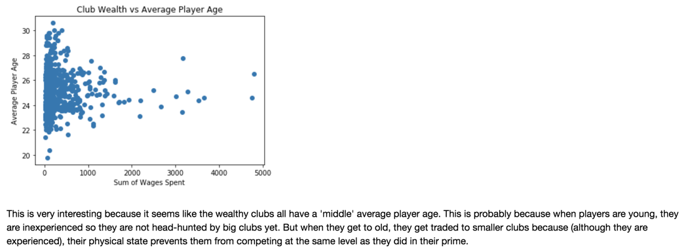
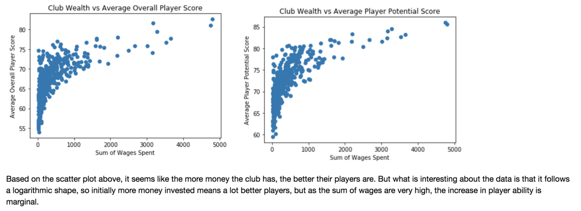
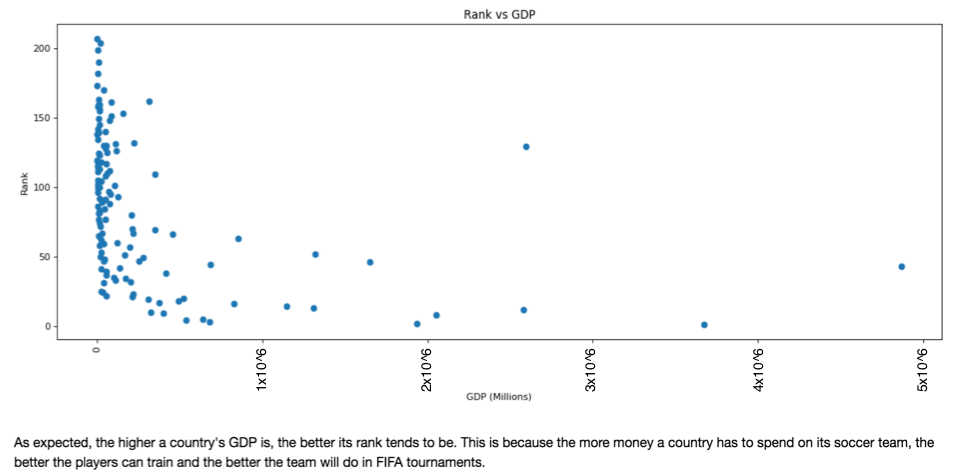
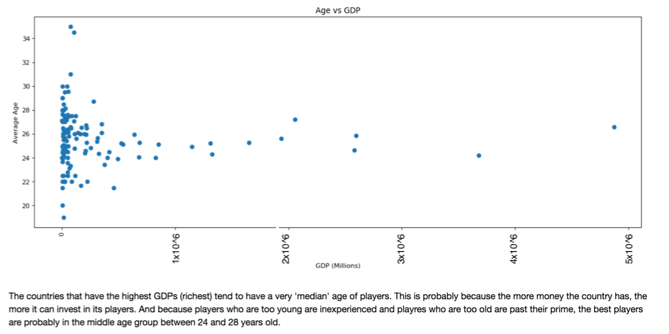
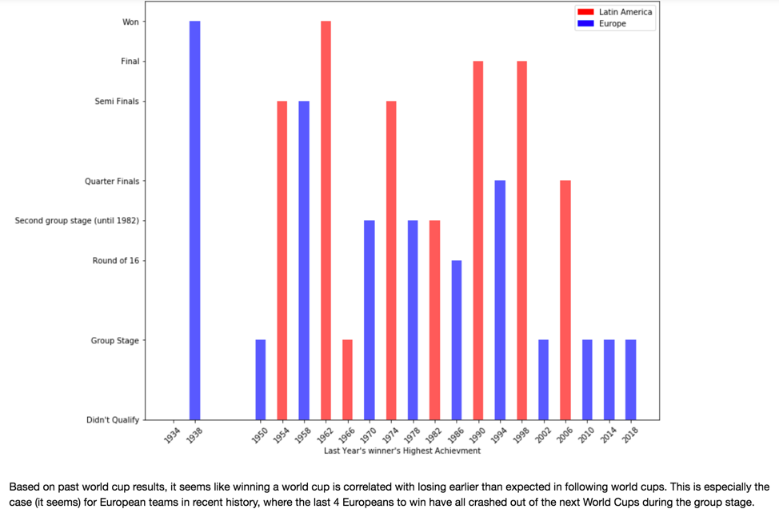
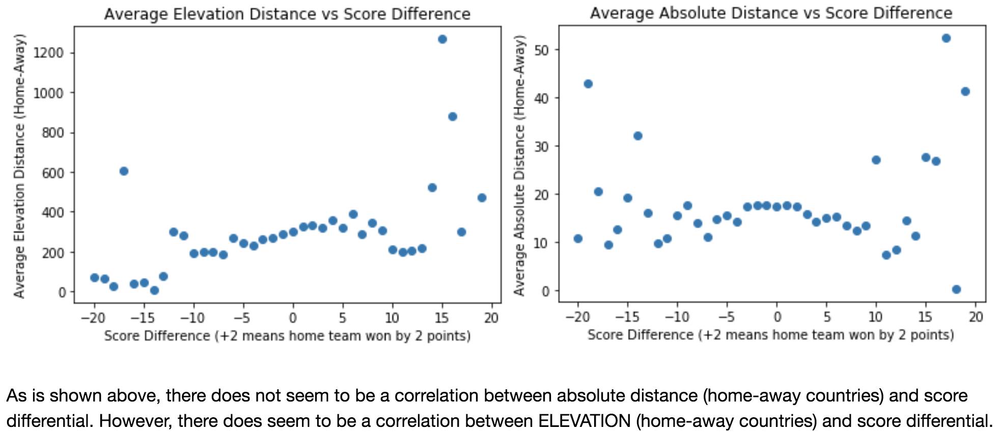
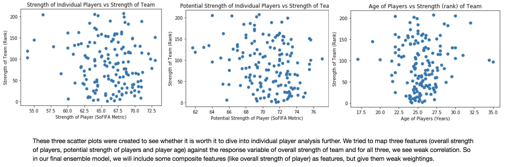
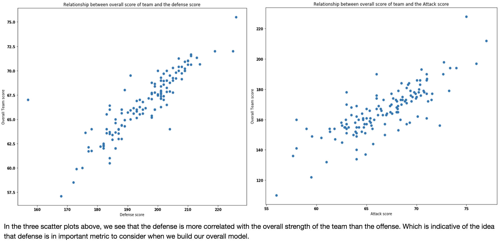

Introduction and EDAs
Initial Analysis and Visualization of our Data
Contents
1. Introduction and Description of Data
Like all previous FIFA World Cup and other sporting events, the 2018 Russia tournament has caught a lot of attention from several statisticians around the world. The major approaches for modeling the soccer data, however, can be divided into two major categories:
Description of Data
Our dataset includes scraped data FIFA.com, player data websites (i.e. squawka.com, whoscored.com, sofifa.com), wikipedia for venue information, accuweather for gameday climate statistics, and again FIFA.com for historical trends, such as how a team performs in different geographical locations.
Following this path, we in this project have set our goal to give a ranking for the teams based on regression models. Based on the data we have collected from different websites such as fifa.com, sofifa.com, squawka and whoscored, and similar projects in github and kaggle, we build our model from statistical analysis of teams, players and goalies. The visualization of our data will be in the latter part of this document.
We are also trying to understand how FIFA ranking and other potential response variables could lead us to predict the results of the tournament. We can use various statistics from each team and each player to construct a model as close to reality as possible. This task will need different modeling of the data to be compared against each other, as well as various feature engineering and feature extraction techniques. We try to make our model work the best with fewest features as possible, to avoid having a complicated model.
Wealth EDAs
1) Wealth (Club) vs Player Age and Quality EDAs
The following three visualizations used club wealth information to correlate wealth with player age and quality.
Fig 1.
Fig 2. and Fig 3.
2) Wealth (Country) vs Player Age and Quality EDAs
The following two visualizations used country GDP information to correlate wealth with country-team rank and player age.
Fig 4.
Fig 5.
*As is visible through the above plots, wealth of country and team is highly correlated with the quality of players, team strength and age of players. This are considerations we have made when building our improved model.
Home-Win Advantage EDAs
1) Neutral Games vs Biased Games
The following piechart is simply to understand Kaggle's dataset better.
Fig 6.

The following map visualization is based on an adjusted dataframe with home advantage score calculated (function provided below).
Fig 7.

2) Match Success by Venue
The following visualizations show the ratio of matches won by neutrality of venue.
Fig 8. and Fig 9.

*As is clearly visible, home-field advantage does play a part in match outcome, so we will be considering a few dimension of this when choosing our additional features.
Population EDAs
1) Population vs Team/Player Quality
The following two graphs were to demonstrate the effect of population on team rank and player quality (overall score).
Fig 10.

Fig 11.

*Interestingly, a smaller country population usually means the team usually performs better in the rankings, but a mid-sized country tends to have a better overall player quality.
Champion's Curse EDA
1) Winning the World Cup and it's Effects
Fact or Fiction?
Fig 12.
*The 'Champion's Curse' tends to have a more significant effect in recent history and also affects European teams more than Latin American teams.
Location EDAs (Longitude, Latitude, Elevation)
1) The Effect of Longitude, Latitude and Elevation on Score Differential between the home and away teams.
Fig 13. and Fig 14.
Additional Player Features EDA
1) Player-wise analysis
Is the whole team better than the sum of it's parts?
Fig 15.
Fig 16.
Fig 17.

*Although defense seems to be the most important, we decided to include many more dimensions than just defensive player statistics because by excluding midfield and offensive statisics, we would be losing many dimensions of player analysis in our model; therefore our improved model includes many dimensions of player analysis in its 33 features.